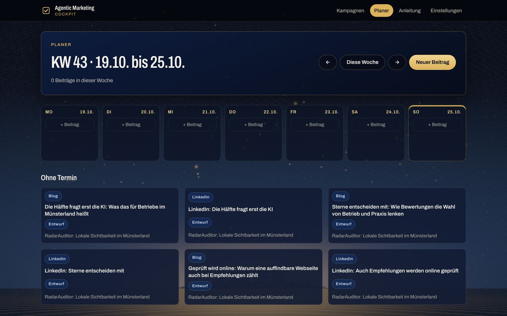
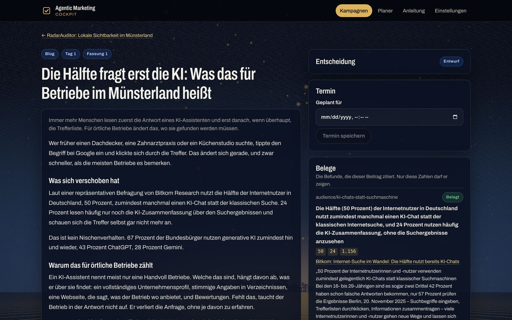
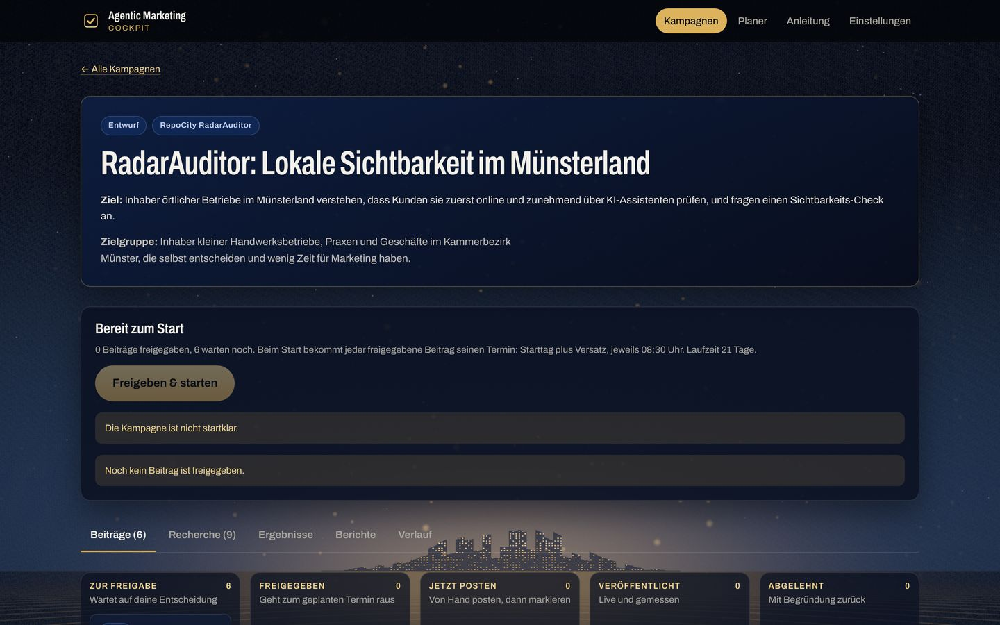
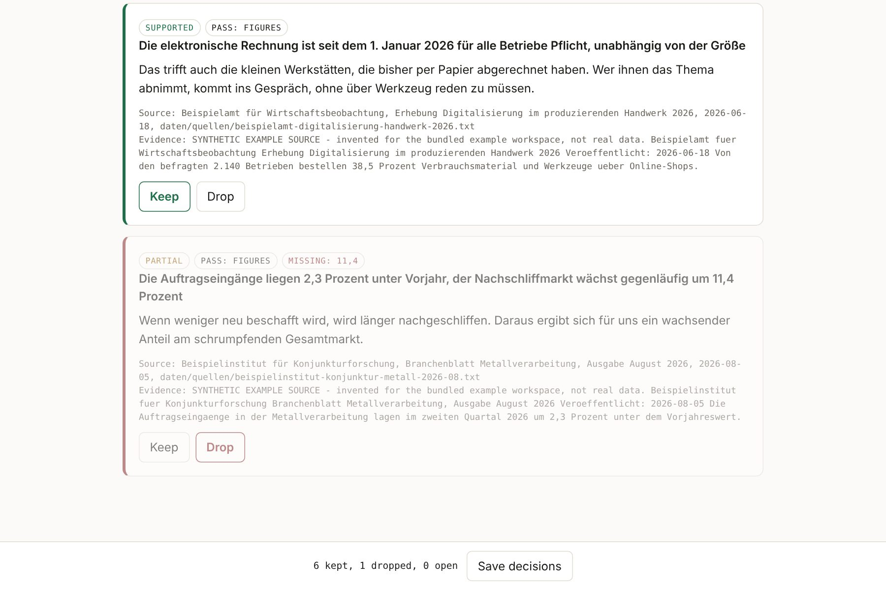

Agentic
Marketing
Recherche in einer Sitzung nach acht Skills, bei der jede Zahl ihre Quelle hat, und Beiträge für jeden Kanal, die erst nach der Freigabe durch einen Menschen rausgehen.Research in one session by eight skills in which every figure has its source, and posts for every channel that only go out after a person has approved them.
- Prüffälle gegen Seiten des Statistischen Bundesamts richtig eingestufttest cases against pages of the Federal Statistical Office classified correctly
- 16/16
- unbelegte Befunde übersehenunbacked findings missed
- 0
- Kanäle in einem Planerchannels in one planner
- 13
Eine ungeprüfte Zahl liest sich genau wie eine geprüfteAn unchecked figure reads exactly like a checked one
Eine Recherche-Sitzung, die einen Markt untersucht, liefert viel Text. Sprachmodelle nennen Zahlen mit großer Sicherheit, und im Marketing sieht eine falsche Zahl die Öffentlichkeit, nicht ein Test. Dazu ist das Ergebnis zu groß: Wer einen ganzen Recherchelauf in die nächste Sitzung lädt, verbraucht den Platz für Material, das niemand behalten wollte.
A research session studying a market produces a lot of text. Language models state figures with great confidence, and in marketing a wrong figure is seen by the public rather than caught by a test. And the output is too large: load a whole research run into the next session and the room goes to material nobody decided to keep.
Hier kommt ein Befund erst in den Arbeitsbereich, wenn jede Zahl in der genannten Quelle gefunden wurde und ein Mensch entschieden hat, was bleibt. Aus den geprüften Befunden entstehen Beiträge. Eine Zahl ohne Beleg sperrt die Freigabe, in der App und in der Datenbank. Gepostet wird von Hand, wenn das RepoCity-Cockpit den Termin meldet.
Here a finding only enters the workspace once every figure has been found in the source it names and a person has decided what stays. The checked findings become posts. A figure without a source blocks approval, in the app and in the database. Posting is done by hand when the RepoCity Cockpit reports the date.
Der Weg einer Zahl in fünf SchrittenThe path of a figure in five steps
- RecherchierenResearch
Eine Recherche-Sitzung folgt acht Skills und schreibt jeden Befund als eigene Datei, mit Zahlen und Quelle.One research session follows eight skills and writes each finding as its own file, with figures and source.
- Zahlen nachschlagenLook figures up
Jede Zahl wird in ihrer Quelle gesucht, über Schreibweisen hinweg; dafür braucht es kein Sprachmodell.Every figure is looked for in its source, across spellings; this needs no language model.
- Offenes prüfen lassenCheck what is open
Nur was offen blieb, geht an ein Sprachmodell, und das muss die Stelle zitieren, auf die es sich stützt.Only what stayed open goes to a language model, which must quote the passage it relies on.
- EntscheidenDecide
Ein Mensch behält oder verwirft jeden Befund. Daraus entsteht die gepflegte Datei, die die nächste Sitzung wieder liest.A person keeps or drops each finding. That builds the curated file the next session reads again.
- Planen und postenPlan and post
Beiträge zitieren nur behaltene Befunde, bekommen im Planer ihren Termin und werden von Hand gepostet.Posts cite kept findings only, get their date in the planner and are posted by hand.
Die App: Kampagnen, Planer, FreigabeThe app: campaigns, planner, approval
Eine installierbare Web-App im RepoCity-Design. Die Bilder zeigen die echte RadarAuditor-Kampagne: neun geprüfte Befunde, sechs geschriebene Beiträge, die als Entwurf auf den Verkaufsstart des Produkts warten und deshalb noch keinen Termin haben.An installable web app in the RepoCity design. The pictures show the real RadarAuditor campaign: nine checked findings and six written posts that wait as drafts for the product's sales start and therefore have no date yet.



Beispiellauf mit eingebautem FehlerExample run with a planted mistake
Sieben Befunde einer Umfeldanalyse für einen erfundenen Werkzeughändler, gegen mitgelieferte Beispielquellen geprüft. Ein Befund behauptet 11,4 Prozent Wachstum, eine Zahl, die in keiner Quelle steht. Der Zahlenabgleich stuft ihn als teilweise belegt ein, der Mensch verwirft ihn.Seven findings of a market analysis for an invented tooling dealer, checked against bundled example sources. One finding claims 11.4 percent growth, a figure no source carries. The figure pass marks it partial, the person drops it.
- …

Was die Zahlen nicht zeigenWhat the figures do not show
- Der Prüfstand misst die Prüfung, nicht die Recherche.The benchmark measures the check, not the research. 16 Fälle aus fünf Seiten einer Behörde. Ob ein Agent gute Befunde findet, ist eine andere Frage.16 cases from five pages of one office. Whether an agent finds good findings is a different question.
- Das Beispiel ist erfunden.The example is invented. Die Quellen des Beispiellaufs sind als Beispielquellen gekennzeichnet. Sie zeigen den Ablauf, keine Marktlage.The example run's sources are marked as synthetic. They show the process, not a market.
- Die erste echte Kampagne ist noch nicht gestartet.The first real campaign has not started yet. Ihre Beiträge warten als Entwurf. Deshalb gibt es noch keine gemessene Wirkung.Its posts wait as drafts, so there is no measured effect yet.
- Seiten ändern sich.Pages change. Jeder Lauf legt Abzüge der Quellen mit Prüfsumme ab, damit ein Ergebnis später nachprüfbar bleibt.Every run stores snapshots of its sources with digests, so a result stays auditable.
OrganigrammHow it works
Zehn Stationen, drei Orte. Verfolgen Sie eine echte Zahl aus der RadarAuditor-Kampagne: 50 Prozent nutzen zumindest manchmal einen KI-Chat statt der Suche
, Quelle Bitkom.Ten stations, three places. Follow a real figure from the RadarAuditor campaign: 50 percent at least sometimes use an AI chat instead of search
, source Bitkom.
- Mensch entscheideta person decides
- läuft automatischruns on its own
- Sperreblock
Am PC des BetreibersOn the operator's PC
-
1
RechercheResearch
Eine Recherche-Sitzung arbeitet nach acht Analyse-Skills und schreibt jeden Befund als eigene Datei in einen datierten Ordner.One research session works by eight analysis skills and writes each finding as its own file into a dated folder.
Die Zahl entsteht: „50 Prozent“, Quelle Bitkom.The figure appears: "50 percent", source Bitkom.
- Skillsskills
- Makroanalyse nach STEPmacro analysis by STEP
- Mikroanalysemicro analysis
- Wettbewerbcompetitors
- Porters fünf KräftePorter's five forces
- Bewertungsauswertungreview mining
- Zielgruppeaudience
- Entwürfe für Blog und LinkedInblog and LinkedIn drafts
-
2
ZahlenabgleichFigure pass
verifyJede Quelle wird einmal geholt, als Abzug mit Prüfsumme abgelegt, und jede Zahl darin gesucht: 90.336 und 90,336 sind dieselbe Zahl, 1,7 und 17 nicht. Dieser Schritt kostet nichts, weil kein Sprachmodell gefragt wird.Each source is fetched once, stored as a snapshot with a digest, and every figure looked for in it: 90.336 and 90,336 are one number, 1.7 and 17 are not. This pass costs nothing, because no language model is asked.
„50“ steht in der Quelle: belegt."50" is in the source: supported.
Steht eine Zahl nicht in der Quelle, heißt das Urteil „nicht belegt“ oder „teilweise“.A figure missing from the source gets "unsupported" or "partial".
- Python
- Abruf mit Zeitlimit und Wiederholungfetching with timeout and retries
- PDF lesenPDF reading
- Zahlen über Schreibweisenfigures across spellings
-
3
ModellprüfungModel pass
verify --modelNur was offen blieb, geht an ein Sprachmodell: ein Befund mit richtiger Zahl, aber falscher Folgerung, oder einer ohne Zahl. Das Modell antwortet über einen erzwungenen Werkzeugaufruf und muss die tragende Stelle zitieren. Ohne lesbare Quelle wird es nicht gefragt.Only what stayed open goes to a language model: a finding with a right figure and a wrong conclusion, or one with no figure. The model answers through a forced tool call and must quote the passage it relies on. Without a readable source it is not asked.
- Anthropic-ProgrammierschnittstelleAnthropic API
- erzwungener Werkzeugaufrufforced tool call
- Zitatpflichtquote required
-
4
Mensch entscheidetA person decides
review · applyAuf der Prüfseite wird jeder Befund behalten oder verworfen. Die Entscheidungen liegen als Datei vor; die gepflegte Datei entsteht allein aus Lauf und Entscheidungen.On the review page each finding is kept or dropped. The decisions are a file; the curated file is built from run and decisions alone.
Der Befund mit „50 Prozent“ wird behalten.The finding with "50 percent" is kept.
Im Beispiellauf wird der Befund mit den erfundenen 11,4 Prozent verworfen.In the example run the finding with the invented 11.4 percent is dropped.
- Mensch in der Schleifehuman in the loop
- Entscheidungen als Dateidecisions as a file
-
5
SitzungskontextSession context
pack · staleEine Sitzung startet mit sechs Grunddateien. Was sie kosten, wird in Zeichen und Tokens gemessen statt geschätzt.
stalemeldet, welche Punkte nach ihrer Art wieder fällig sind, und löscht nichts.A session starts with six base files. What they cost is measured in characters and tokens rather than estimated.stalereports which points are due again by their kind and deletes nothing.- Kontextbudgetcontext budget
- Alter statt Verfallsdatumage, not expiry
In Datenbank und AppIn database and app
-
6
Kampagne übergebenHand over the campaign
campaignKampagne und Beiträge stehen als Dateien im Arbeitsbereich. Der Zahlenwächter prüft jeden Beitrag gegen die Befunde, die er zitiert, und übergibt alles an die Datenbank.Campaign and posts are files in the workspace. The figure guard checks each post against the findings it cites and hands everything to the database.
Der Blogbeitrag „Die Hälfte fragt erst die KI“ zitiert den Befund.The blog post "Die Hälfte fragt erst die KI" cites the finding.
- Pydantic
- Zahlenwächterfigure guard
- REST-SchnittstelleREST interface
-
7
DatenbankDatabase
Supabase mit PostgreSQL. Zeilenrechte (Row Level Security) lassen nur den Administrator schreiben. Ein Trigger verweigert jede Freigabe mit einer Zahl ohne Beleg, auch wenn jemand die App umgeht. Die Sicht „plan“ legt jeden Beitrag auf seinen Tag.Supabase with PostgreSQL. Row level security lets only the administrator write. A trigger refuses any approval with an unbacked figure, even when someone bypasses the app. The view "plan" puts every post on its day.
Zahl ohne Beleg: Freigabe verweigert.Figure without a source: approval refused.
- Supabase
- PostgreSQL
- Zeilenrechte (Row Level Security)row level security
- Trigger als Sperretrigger as a lock
- pg_cron
-
8
App mit PlanerApp with planner
Prüfen, bearbeiten, freigeben, starten. Der Planer zeigt eine Woche mit allen Beiträgen aus dreizehn Kanälen; neue Beiträge bekommen einen eigenen Termin. Die Zahlenprüfung läuft beim Tippen mit.Review, edit, approve, start. The planner shows a week with every post across thirteen channels; new posts get a date of their own. The figure check runs while typing.
Der Beitrag wird freigegeben und bekommt seinen Termin.The post is approved and gets its date.
- TypeScript
- Preact
- Vite
- installierbare Web-App (Progressive Web App)progressive web app
- Cloudflare Pages
HinausOut
-
9
RepoCity-CockpitRepoCity Cockpit
Die Datenbank meldet drei Dinge an das Cockpit, in dem alle RepoCity-Apps melden: ein Beitrag wartet auf Freigabe, der Termin ist erreicht (stündlich geprüft), ein Beitrag ist veröffentlicht. Eine gescheiterte Meldung blockiert nie den Beitrag.The database reports three things to the Cockpit where every RepoCity app reports: a post waits for approval, its moment has come (checked hourly), a post is published. A failing message never blocks the post.
Meldung: „Jetzt posten: Die Hälfte fragt erst die KI“.Message: "Jetzt posten: Die Hälfte fragt erst die KI".
- Triggertriggers
- stündlicher Zeitplan (pg_cron)hourly schedule (pg_cron)
-
10
Von Hand postenPost by hand
Text kopieren, im Firmenkonto des Kanals posten, Adresse eintragen, „Als gepostet markieren“. Beim Kopieren bekommt jeder Link auf eine eigene Seite unter speedofthespirit.dev Kanal, Kampagne und Beitrag als Herkunfts-Merker (die Adresszusätze utm_source, utm_medium, utm_campaign und utm_content), außer im Blog, der selbst eine eigene Seite ist; daran erkennt das RepoCity-CRM, aus welchem Kanal eine Anfrage kommt. Impressionen, Klicks und Anfragen werden im Beitrag eingetragen und gegen die Ziele der Kampagne gezeigt.Copy the text, post it from the channel's company account, enter the address, "Als gepostet markieren". On copying, every link to an own page under speedofthespirit.dev gets channel, campaign and post as origin markers (the address parameters utm_source, utm_medium, utm_campaign and utm_content), except in the blog, which is an own page itself; from them the RepoCity CRM tells which channel an inquiry comes from. Impressions, clicks and inquiries are entered on the post and shown against the campaign goals.
Die Zahl geht hinaus, mit ihrer Quelle.The figure goes out, with its source.
- Blog, LinkedIn, X, XING, Instagram, Facebook, Threads, YouTube, TikTok, Reddit, Forum, Presse, Newsletterblog, LinkedIn, X, XING, Instagram, Facebook, Threads, YouTube, TikTok, Reddit, forum, press, newsletter
- Herkunfts-Merker (utm)origin markers (utm)
MessungenBenchmarks
Gemessen gegen Seiten, die das Statistische Bundesamt veröffentlicht, nicht gegen Testdaten.Measured against pages the Federal Statistical Office publishes, not against test data.
Prüfstand: 16 Fälle, zwei PrüfschritteBenchmark: 16 cases, two passes
Zusammen übersehen beide Schritte keine unbelegte Aussage und schlagen nie falschen Alarm.Together the two passes miss no unbacked statement and never raise a false alarm.
…
Der Zahlenabgleich kann umgedrehte Aussagen nicht sehen: Ihre Zahlen stehen wirklich in der Quelle, nur die Richtung stimmt nicht. Für ihn gelten diese zwei Fälle als belegt. Genau die fängt das Sprachmodell.The figure pass cannot see reversed statements: their figures really are in the source, only the direction is wrong. For it these two cases count as supported. Those are exactly what the language model catches.
Fall für Fall, nach Art der VeränderungCase by case, by kind of alteration
- …
- ✓belegtsupported
- ½teilweisepartial
- ✕nicht belegtunsupported
- –nicht erreichbarunreachable
Alle 16 Aussagen mit Urteil lesenRead all 16 statements with verdicts
Quelle:Source: benchmark/RESULTS.md, benchmark/results.json, benchmark/cases.yaml.
Beispiellauf: was übrig bleibtExample run: what is left
Die gepflegte Datei ist ein Drittel so lang wie der Rohlauf. Eine Sitzung startet mit rund 1.419 Tokens.The curated file is a third as long as the raw run. A session starts with about 1,419 tokens.
Das Beispiel ist klein genug zum Lesen. Ein echter Lauf, dessen Rohordner die heruntergeladenen Quellen und Arbeitsnotizen enthält, verdichtet weit stärker; gemessen wird nach jedem Lauf, statt es zu behaupten.The example is small enough to read. A real run, whose raw folder holds the downloaded sources and working notes, compresses far harder; the figure is measured after every run rather than claimed.
Quelle:Source: README, Quickstart, nachgerechnet mitreproduced with agentic-marketing apply undand pack aufon tests/fixtures/workspace.
Was der Prüfstand gefunden hatWhat the benchmark found
- Ein verschlucktes Dezimalkomma.A dropped decimal comma. Der Zahlenabgleich entfernte das Komma, so passte 1,7 auf die 17 eines Datums an anderer Stelle. Ein Trennzeichen vor drei Ziffern darf wegfallen, jedes andere nicht.The figure matcher stripped the comma, so 1.7 matched the 17 of a date elsewhere on the page. A separator before three digits may be dropped, any other may not.
- Ein falsch gelesenes Datum.A misread date. Die Korrektur hielt den Punkt in „1. Januar 2026“ für ein Dezimalzeichen. Ein Trennzeichen zählt nur noch zur Zahl, wenn auf beiden Seiten eine Ziffer steht.The fix took the dot in "1. Januar 2026" for a decimal separator. A separator now only counts as part of a number when a digit stands on both sides.
Beide Fehler sind behoben und durch Tests festgehalten.Both defects are fixed and pinned by tests.